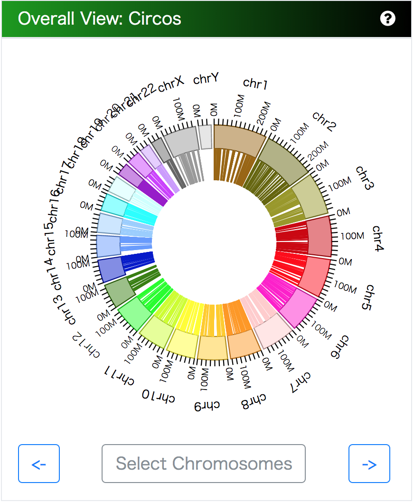
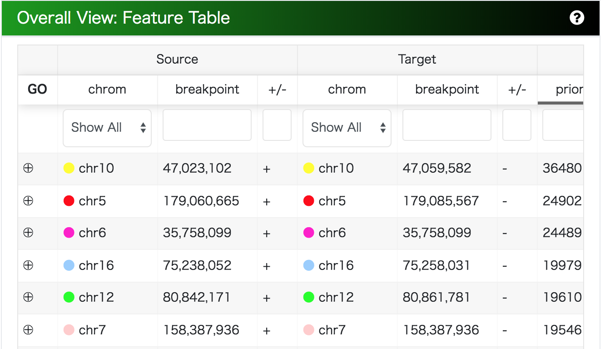
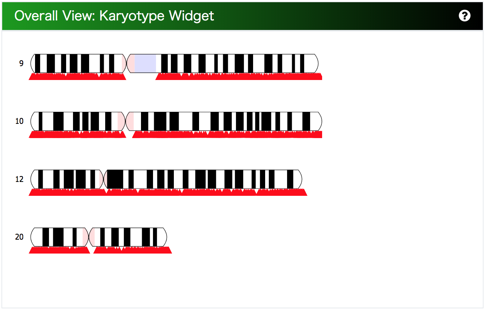
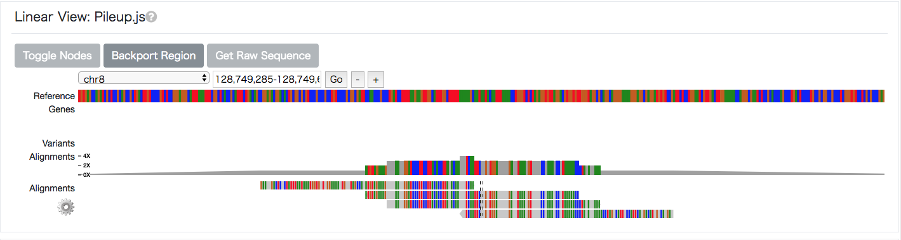

MoMI-G
Modular Multi-scale Integrated Genome Graph Browser

当ソフトウェアは、グラフゲノムのインタラクティブな可視化を目的とするツールです。このツールでは特に、以下のような解析をグラフゲノムという形で可視化することを想定し、それらの機能に特化した実装を行っています。
- 全ゲノムにおける構造多型の可視化
- ハプロイドごとの構造多型の可視化
- リファレンスゲノムグラフの可視化
このデモでは CHM1 データセット(http://eichlerlab.gs.washington.edu/publications/chm1-structural-variation/ )を含む個人グラフゲノムの配列情報を可視化することができます。このグラフを以下では CHM1 graph と呼んでいます。
注意事項・仕様
スマートフォンからの接続は想定しておりません。またページを開いたときに画面サイズによっては、ビューが画面からはみだしてしまう現象を確認しております。お手数ですが、ブラウザのズーム設定で適宜調節するか、スクロールしてご利用下さい。
表示したい座標位置を連続で切り替えると Partial-Graph View でローディングが発生し、しばらくの間変化が反映されず、数秒後にまとめて変化が反映される現象が確認されています。Partial-Graph View のロードが完了してから次の座標位置を選択してください。
使い方
画面上にタイル上に配置されたコンポーネントがあります。これらを上から順に操作することで、グラフゲノムにおける 全ゲノムレベル の情報から 1 塩基レベルの情報まで得ることができるようになることを目指しています。それぞれの利用方法を説明します。また利用を検討されるユーザーの方に、入力となるデータについての説明も付与しました。
（UCSC、Ensembl などのゲノムブラウザをすでに用いたことのある方を主に説明の対象としています）
Design: dashboard style
このブラウザは、様々なパーツがダッシュボード上に配置されて、それらのコンポーネントは自由にレイアウトを変更することができます。ページ上部のナビゲーションバーでは、README をクリックすると別タブでこの説明が表示されるほか、Layout をクリックするとダッシュボードのレイアウトを変更することができます。また右上の Edit ボタンをクリックすると、配置されるコンポーネントを自由に変更・追加・削除することができます。
0. Path-Region Workspace
以下に示す Overall View モジュールで染色体上の座標を選択すると、その選択された座標区間は、カードの形で Workspace 上に並べられます。このカードのうち、最も左に位置しているカードが、以下の Graph View 及び Linear View で表示されるものとなります。
カードは自由に並べ替えることができます。ドラッグアンドドロップで位置を交換することができるほか、カードの何も書かれていない部分をダブルクリックすることで、その要素を最も左に移動させることができます。
次に、カード内部のボタンについて説明します。

最も上段に位置している"Add tags"と書かれた入力画面では、このカードに対して任意のラベルを付けることができます。またこのラベルは、複数つけることもできます。
中段のテキストボックスには、参照配列上の座標位置が表示されています。このテキストボックスを書き換えることで参照配列の座標やアノテーションから内部的なグラフゲノム上の座標を選択することが可能です。CHM1 graph では以下の座標系に対応しています。
- 遺伝子名(GENCODE データセットの gene_name に準拠)
- hg19 上の座標
このうち遺伝子名は、先頭の文字を入力すると自動補完結果が出力され、その中の項目をクリックすることによっても選択することも可能です。ここで選択した範囲に対して、Partial-Graph がレンダリングされます。
また可視化対象の位置を左右に移動させる操作のために"<-"、"->"ボタンを用いるほか、可視化対象の位置の縮尺を拡大・縮小させる操作のために"+"、"-"ボタンを用います。もっとも左の"◎"ボタンをクリックすると、入力した文字で確定し、遺伝子名を入力した場合はそれに対応する座標区間が表示されます。ピンのボタンをクリックすると、そのカードが消えないようにピン止めされます。複製ボタンを押すと同じ座標位置のカードが複製されるほか、塗りつぶされた"o"ボタンをクリックすると、そのカードを除いた他のカードが全て削除されます。また塗りつぶされた"x"ボタンをクリックすると、そのカードが削除されますが、ピン留めされている場合は表示されません。
Overall View
Overall View のレイヤーでは、Whole-genome レベルの情報（パスに相当する）から染色体上の場所を一意に選択するためのナビゲーションを提供しています。特に、GUI の上で染色体上の 2 座標間の対応関係(2 座標のペア)を選択することが可能です。これを提供するには予め計算した、2 座標間の対応関係のリストを与える必要があります。
CHM1 graph では構造多型として列挙された挿入や欠失、逆位のなかで、ある一定の距離離れているものをフィルタリングし、Insertion であれば挿入位置、Deletion/Inversion であれば欠失・逆位の開始点および終了点、Translocation であればその転座によって連結する 2 箇所の染色体の座標を 2 座標のペアとして扱い、この Overall View のレイヤーでナビゲーションする対象としています。
1. Circos Plot
Circos Plot では、染色体上の 2 座標間の対応関係を円状に配置された染色体の間の線で表現します。染色体をクリックすると、その染色体内の inter-chromosomal な対応関係が Chromosome Graph に表示されます。また対応関係の線にカーソルを合わせると、その線で表現されている対応関係の説明がツールチップで表示され、線をクリックするとその対応関係の Partial Graph が表示されます。
ここでは主に inter-chromosomal な対応関係の情報を提供しますが、今回のように intra-chromosomal な対応関係のみであっても、その頻度を視覚的にとらえることが可能となります。

2. Feature Table
Excel のような表形式で、予め与えられた 2 座標間の対応関係のリストを表示しています。このビューの上で、染色体ごとの絞り込みや座標位置によるソートを行うことが可能です。
対応関係の行をクリックすると、 Workspace にその染色体上の領域が追加されます。

3. Threshold Filter
スライダーを左右に調節することで、対応関係に設定された優先度(Priority)で、スライダーで指定された範囲の対応関係のみを、Overall View の種々のデザイン上で表示することができます。
また、"Inter-chromosome"ないし"Intra-chromosome"チェックボックスを入にすることで、その特定の対応関係のみを表示することが可能になります。
4. Karyotype Widget
Path Region Workspace で選択した参照配列の染色体の核型が表示されます。またその核型の下に、意匠によって、参照配列の変異が表示されます。
- 染色体内の小さい変異は赤い意匠で表示
- 染色体をまたぐ要素は緑の線で表示
また、ドラッグすることで表示する位置を変えたり、スクロールすることでサイズを拡大・縮小することもできます。

5. Chromosome-Graph/Scale View
2 座標間の対応関係が 1 本の染色体上に載っているものに限定して、その様態を表現するビューです。
横に参照配列上の 1 本の染色体を表現し、その上の対応関係を弧で表現しています。弧にカーソルを合わせると、その弧で表現されている対応関係の説明がツールチップで表示され、クリックするとその区間の Partial Graph が表示されます。また Scale のブラシをドラッグする、または Scale 上の軸をクリックすることで、その染色体上で可視化したい座標区間を変更することができます。
Graph View
6. SequenceTubeMap
Overall View で選択した座標区間のグラフビューを表示します。計算量に対する制約として、表示するの範囲をパス換算で 50,000bp より大きな粒度で指定した場合はレンダリングされません。
グラフビューの見方を説明します。このビューは、ノードとパスを用いて、座標区間のグラフをレンダリングしています。
- ノード: 塩基配列に対応する配列を意味します。
- ノードの長さは、そのノードに含まれる配列の長さに比例しています。
- ドロップダウンメニューで切り替えると、塩基配列を文字情報として表示することができます。
- ノード上にマウスカーソルをあわせると、ツールチップにそのノード id が表示されます。
- 染色体名が付けられているパス: 染色体名が付けられている線の上でノードをたどると、それらのノードはその並び順で参照配列に含まれていることがわかる。
- 変異名が振られているパス: 変異名や、ハプロタイプの識別名が付けられている線をたどると、その線の上のノードがその並び順で個人ゲノムに含まれていることがわかる。
- 遺伝子名が振られているパス: その区間には遺伝子のアノテーションが付与されています。また色の濃淡によってコーディング領域かそうでないかが分かるようになっており、色が濃い領域が exon 領域、色が薄い領域が intron 領域です。
- パスの線の太さや色は、情報の種類を区別する以外には現時点では意味はありません。
また、チェックボックスやドロップダウンメニューには、以下の効用があります。
- MergeNodes: 冗長なノードをマージするかどうかを選択できる。
- Annotations: 遺伝子などのアノテーションをパスとして統合するかどうかを選択できる。
- NodeDesignDropdownMenu: ノードの文字を全て表示させるか、ノードを塩基配列の長さに応じて伸縮するか、などノードのデザインを選択できます。
背後のデータとして、このようなグラフ構造を陽に持つデータセットを入力として与えるか、リニアゲノムをもとにしたデータセットに対してはグラフ構造を構築するようなラッパーを定義する必要があります。

Linear view
7. Annotation Table
Graph View で表示されている区間に存在する遺伝子のアノテーションについて、その詳細情報をテーブル形式の一覧で表示します。

Supplemental View
その他、"Edit"ボタンをクリックすることによってダッシュボードに追加可能となるデザイン、あるいは実装を予定しているデザインについて紹介します。
8. Linear Browser
Overall View で選択した座標区間のリニアビューを表示します。
現状の実装では、pileup.js を用いてリニアゲノム向けのゲノムブラウザをレンダリングしています。CHM1 graph では、hg37 上の対応する区間の塩基配列を表示するほか、その上の遺伝子アノテーションについても表示しています。
（これにより、Overall View で選択し、Graph View で可視化された Partial Graph で表現される区間が、どの遺伝子アノテーション上と対応しているかをみることができます。また"Backport Regions"ボタンをクリックすると、このゲノムブラウザ上で選択された領域をグラフビューで再び表示することも可能です。
pileup.js では bigbed 形式の遺伝子アノテーション、vcf 形式の変異アノテーションや bam 形式のパイルアップを表示することができるため、これ以外にトラックを追加することもできます。）

9. Upload Form
構造多型を表現するためのフォーマットとして一般的に用いられている VCF ファイルをアップロードすると、サーバーの内部でグラフ表現に変換し、個別に uuid が発行されます。
変換には時間がかかりますが、変換が終わった後でこの uuid をもとにアクセスすると、デフォルトで表示されている CHM1 graph ではなく、アップロードした VCF ファイルで表現されている構造多型を可視化しています。
VCF ファイルの変換はvcf2ggfに依拠しています。
10. Path-Region Form
参照配列上の座標を指定するための、カード形式ではないシンプルなデザインの input box です。
11. Sankey Diagram
Overall View で選択した座標区間のグラフビューを表示します。計算量に対する制約として、表示するの範囲をパス換算で 50,000bp より大きな粒度で指定した場合はレンダリングされません。
グラフビューの見方を説明します。このビューは、ノードとエッジを用いて、座標区間のグラフをレンダリングしています。
- 染色体の色で表現されているエッジ: 1. Circos Plot で表現されている染色体の色によって結ばれているエッジは、そのエッジが参照配列のパスの上に位置していることを示唆します。
- グレーで表現されているエッジ: これは、参照配列のパスの上にそのエッジが位置しないことを示唆します。
- エッジの太さには、現時点では意味はありません。
- ノード: 塩基配列に対応する配列を意味します。
- ノードの長さは、そのノードに含まれる配列の長さに比例しています。
- ノードは、そのノードがパス上に位置している場合は、「パス名：始点に対応するパス上の座標」という形で、そうでない場合は、短い配列の場合は塩基配列、長い配列の場合は塩基配列の長さという形で表示されます。
エッジをクリックすると色が濃くなり、再びクリックすると色が薄くなります。色が濃くなるとそのエッジを選択していることになります。現在はエッジを選択することに意味はありません。またノードを選択すると、ノードの位置を上下させることができます。これにより、見にくいノードやエッジを見やすい位置に再配置することができます。
また"Show Annotation"チェックボックスが入になっている場合は、現在の設定ではリファレンス配列上の遺伝子アノテーションとリピート配列アノテーションが配列のノード上に表示されます。左右方向の大きさは、そのノード上のアノテーションの始点と終点の大まかな位置に対応しています。
背後のデータとして、このようなグラフ構造を陽に持つデータセットを入力として与えるか、リニアゲノムをもとにしたデータセットに対してはグラフ構造を構築するようなラッパーを定義する必要があります。
シーケンスグラフで表現可能なグラフゲノム
hg19 や hg38 といった今まで広く用いられている参照配列など、1 本の配列で表現されるゲノム（ここでは、これをリニアゲノムと呼びます）に比べて情報科学的なエッジとノードで構成されるグラフゲノムを用いることは、1 種類のリニアゲノムに比べてより多くの情報量をもとに解析が行える点、またグラフゲノムが表現しているリニアゲノムの集合に比べて、共通部分が集約されているために少ない計算量で解析が可能になる点で、今後の解析ワークフローにおいて有望であると考えています。
広義にグラフゲノムと呼ばれる問題のうち、Sequence Graph と呼ばれる、Bi-Directed Graph の一種をここでは扱います。Sequence Graph はゲノム配列を内部に持つ情報科学的なデータ構造として、以下の性質を持ちます。
- ノード: 塩基配列を表現する。
- エッジ: 塩基配列と塩基配列の End-to-End の隣接関係を表現する。
例えば SNV を表現したい時、参照配列上のある座標においてヴァリアントの候補に A という塩基と T という塩基があった場合、ノードとして「A」、「T」を有し、それらはこの SNV の前後を表現するノードからそれぞれエッジで結ばれるような形での表現が、この Sequence Graph の上で可能になります。
更に、パスという概念があります。
- パス: 始点と終点を持つノードの列で、それぞれのノードとノードの間にはエッジが存在する。
このパスによって参照配列や個人ゲノムの染色体が、どのノードを経由した配列によって表現されるのかを扱うことが可能になります。ここでは、このノード、エッジ、パスで表現されるグラフゲノムのフォーマットについて、可視化の対象としています。CHM1 graph では、パスは hg19 の参照配列のそれぞれの染色体、ノードとエッジによって SV が表現されています。
フィードバックのお願い
ソフトウェアの継続的改善のため、使用感の報告やバグレポート、アドバイスをいただきたいと考えております。またお手持ちのデータをプロトタイプシステムで可視化したいという要望につきましても、是非ご相談を承ります。ページ下部のGoogle Formよりご連絡下さい。なおご意見やご質問につきまして、内容によっては回答を広く周知すべく、ウェブサイトその他の媒体で公開させていただくことがありますこと、予めご承知置き下さい。
更新履歴
- 2017.08.09 α 版公開
- 2017.08.29 α 版更新(ヒント追加、軽微なバグ修正)
- 2017.09.01 α 版更新(グラフ上でのアノテーション可視化機能追加)
- 2017.09.08 α 版更新(グラフデザイン修正)
- 2017.09.14 α 版更新(テーブルデザイン修正)
- 2017.09.26 α 版更新(SV を含んだ CHM1 グラフ追加)
- 2017.12.12 β 版正式公開(ダッシュボードデザイン修正)
- 2017.12.19 β 版更新(遺伝子アノテーション追加)
- 2017.12.26 β 版更新(hg19/38 切り替え、核型表示追加)
- 2018.01.02 β 版更新(デバッグ、遺伝子名絞り込み機能追加)
- 2018.01.09 β 版更新(カラースキーム修正)
- 2018.01.16 β 版更新(座標配列のデザイン修正)
- 2018.01.23 β 版更新(バグフィックス)
- 2018.01.28 RC 版リリース
- 2018.02.10 Ver 1.0 リリース
免責事項
当ソフトウェアの出力結果の最新性、正確性や妥当性につきまして、一切の保障はいたしません。また当ソフトウェアを用いることで生じたあらゆる損害について、一切の責任を負いません。
References
- Chaisson, M. J. P., Huddleston, J., Dennis, M. Y., Sudmant, P. H., Malig, M., Hormozdiari, F., … Eichler, E. E. (2015). Resolving the complexity of the human genome using single-molecule sequencing. Nature, 517(7536), 608–611. http://doi.org/10.1038/nature13907
- Garrison, E., Novak, A., Hickey, G., Eizenga, J., Dawson, E., Jones, W., … Durbin, R. (2017). Sequence variation aware references and read mapping with vg : the variation graph toolkit. bioRxiv, 1–27. http://doi.org/10.1101/234856
- Beyer, W. SequenceTubeMap, https://github.com/vgteam/sequencetubemap
- Vanderkam, D., Aksoy, B. A., Hodes, I., Perrone, J., & Hammerbacher, J. (2016). pileup.js: a JavaScript library for interactive and in-browser visualization of genomic data. Bioinformatics, 32(March), btw167. http://doi.org/10.1093/bioinformatics/btw167
- Paten, B., Novak, A. M., Garrison, E., & Hickey, G. (2017). Superbubbles, Ultrabubbles and Cacti. bioRxiv, 1–13. http://doi.org/10.1101/101493
- Harrow, J., Frankish, A., Gonzalez, J. M., Tapanari, E., Diekhans, M., Kokocinski, F., … Hubbard, T. J. (2012). GENCODE: The reference human genome annotation for the ENCODE project. Genome Research, 22(9), 1760–1774. https://doi.org/10.1101/gr.135350.111
- Weitz, E. ideogram, https://github.com/eweitz/ideogram
- TogoGenome. http://togogenome.org/
- DBCLS. (2016). SPARQList https://github.com/dbcls/sparqlist